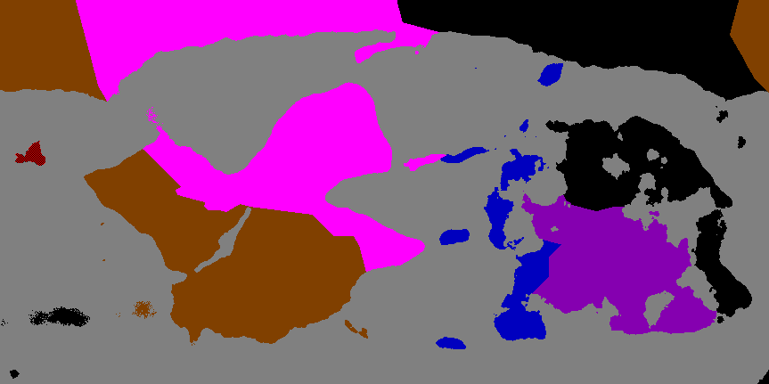
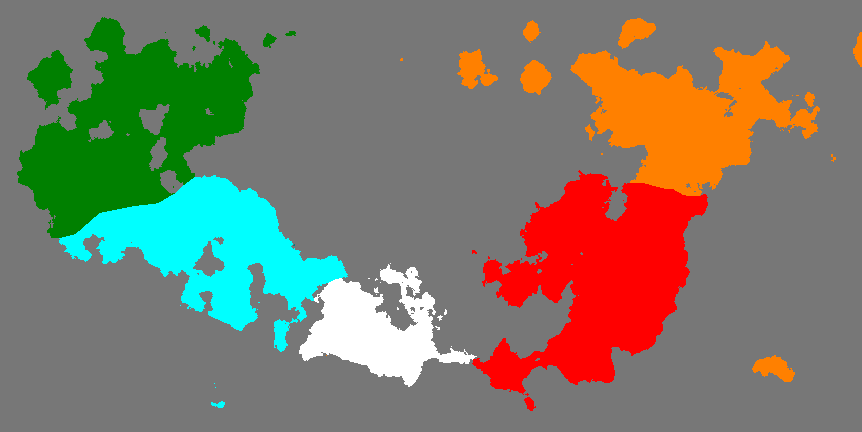

Back
Major Nations
There are ten major nations, each corresponds to an element. The five nations corresponding to the dark elements have their capitals on earth, and are mostly human. The five nations corresponding the the light elements have their capitals on Ithrin, and are mostly Ithrinian (go figure). Peimein is the only nation where Ithinians are not allowed, and Gailaborne is the only nation where humans are not allowed.
- Space: Epros
- Dark: The Tezago Empire
- Water: The Democratic Peoples' Republic of Peimein
- Rock: Aglon
- Magnetism: Okhyan
- Time: Deilon
- Light: Alastra
- Fire: Gailaborne Kingdom
- Air: Oshil
- Lighning: Bleinail
These maps show the political boundaries on Earth and Ithrin. The nations are color-coded by element, the red/black checkered island on earth is uninhabited, as it's where the elementals re-spawn:
Earth

Ithrin

Intersolar Territory
Planet ownership (diameter and gravity are given in units of how times more it is than on earth):
Alastra:
- Telein, the 9th planet of the Lumein System. Diameter: 0.572, Gravity: 0.398, Medium pop density, One moon (Zanyae)
- Trateo, the 43rd moon of Modisign, the 1st planet of the Iqaon System. Diameter: 0.1, Gravity: 0.333, low pop density.
- Holon, the 4th moon of Vael, the 2nd planet of the Iquon System. Diameter: 0.1, Gravity: 1.408, high pop density.
Peimein:
- Chi, the 6th moon of Dreicon, the 4th planet of the Ocri System. Diameter: 0.1, Gravity: 1.509, Low pop density.
Oshil:
- Ureinoes (shared ownership), the 4th planet of the Crein System. Gas giant. Diameter: 5.482, Gravity: 0.958, high pop density, 21 moons.
- Chraemol, the 5th planet of the Crein System. Gas Giant. Diameter: 5.861, Gravity: 2.063, medium pop desity, 158 moons.
- Bin, the 43rd moon of Chraemol, the 5th planet of the Crein System. Diameter: 0.1, Gravity: 1.272, medium pop desity.
- Din, the 63rd moon of Chraemol, the 5th planet of the Crein System. Diameter: 0.1, Gravity: 2.404, low pop desity.
Erpos:
- Ureinoes (shared ownership), the 4th planet of the Crein System. Gas giant. Diameter: 5.482, Gravity: 0.958, high pop density, 21 moons.
- Xoom, the 3rd moon of Ureinoes, the 4th planet of the Crien System. Diameter: 0.1, Gravity: 2.26, low pop density.
Tezago:
- Loon, the 6th moon of Zhan, the 13th planet of the Iqaon System. Diameter: 0.1, Gravity: 1.431, high pop density.
- Lein, the 24th moon of Zhan, the 13th planet of the Iqaon System. Diameter: 0.1, Gravity: 2.012, medium pop density.
- Laok, the 32nd moon of Zhan, the 13th planet of the Iqaon System. Diameter: 0.179, Gravity: 0.823, high pop density.
- Limier, the 46th moon of Zhan, the 13th planet of the Iqaon System. Diameter: 0.1, Gravity: 1.088, very high pop density.
Aglon:
- Venaer, the 12th moon of Vael, the 2nd planet of the Iqaon System. Diameter: 0.190, Gravity, 2.407, medium population density.
- Terral, the 25th moon of Vael, the 2nd planet of the Iqaon System. Diameter: 0.318, Gravity: 1.012, very high population density.
Gailaborne:
- Gailasil, the 1st planet of the Voph System. Diameter: 0.671, Gravity: 0.334, medium pop density, 1 moon (Shen).
Deilon:
- Memdath, the 8th moon of Aerimni, the 3rd planet of the Enu System. Diameter: 0.195, Gravity: 0.330, Low pop density.
- Shrinil, the 10th moon of Aerimni, the 3rd planet of the Enu System. Diameter: 0.1, Gravity: 2.158, Low pop density.
- Cal, the 11th moon of Aerimni, the 3rd planet of the Enu System. Diameter: 0.174, Gravity: 1.485, Low pop density.
- Tamokh, the 29th moon of Aerimni, the 3rd planet of the Enu System. Diameter: 0.428, Gravity: 0.460, Low pop density.
- Gonail, the 48th moon of Aerimni, the 3rd planet of the Enu System. Diameter: 0.213, Gravity: 0.839, Low pop density.
- Taeshoon, the 63rd moon of Aerimni, the 3rd planet of the Enu System. Diameter: 0.151, Gravity: 1.395, Low pop density.
Bleinail:
- Laevon, the 3rd planet of the Voph System. Gas Giant. Diameter: 7.852, Gravity: 0.640, low pop density, 67 moons.
- Meilcroes, the 66th moon of Laevon, the 3rd planet of the Voph System. Diameter: 0.517, Gravity: 0.323, high pop density.